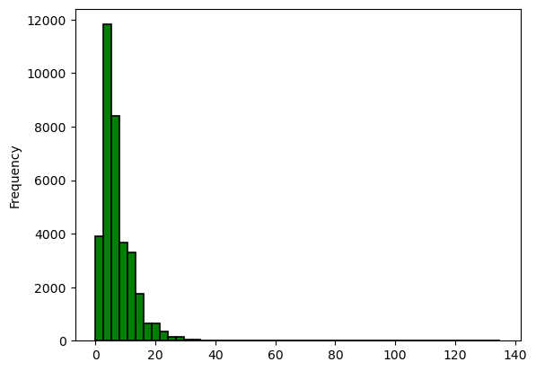
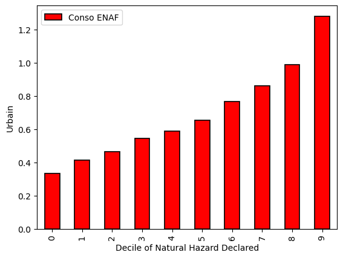
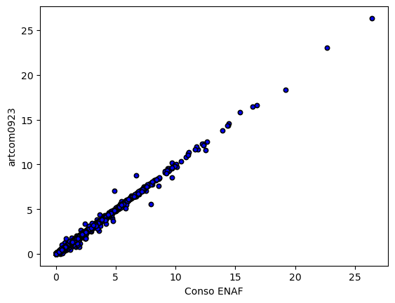
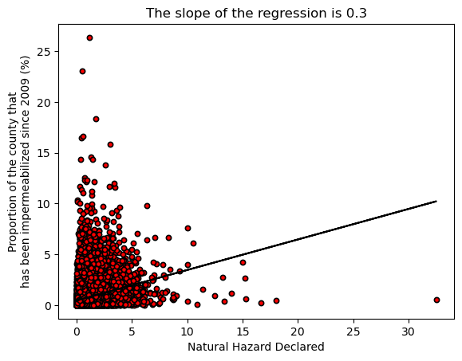
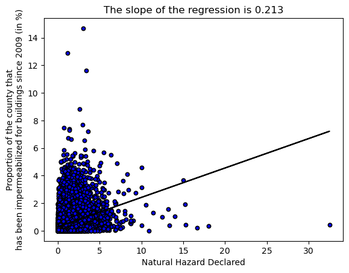

import pandas as pd
import numpy as np
import matplotlib.pyplot as pltdata = pd.read_csv('data(4).csv', sep=';')
data.columns = data.iloc[1]
data = data.drop([0, 1])data.columns = ['Code', 'Libellé', 'Cat', 'Evolution SAU', 'Urbain', 'Zone humide', 'Forets', 'Agri', 'Superficie', 'Conso_ENAF', 'Population']data| Code | Libellé | Cat | Evolution SAU | Urbain | Zone humide | Forets | Agri | Superficie | Conso ENAF | Population | |
|---|---|---|---|---|---|---|---|---|---|---|---|
| 2 | 01001 | L'Abergement-Clémenciat | 2 | 6.2 | 3.7 | 0 | 24.1 | 72.3 | 15.9 | 6.8 | 832 |
| 3 | 01002 | L'Abergement-de-Varey | 2 | 21.1 | 0 | 0 | 64.8 | 35.2 | 9.2 | 1.5 | 267 |
| 4 | 01004 | Ambérieu-en-Bugey | 10 | -7.8 | 35.6 | 0 | 49 | 15.4 | 24.6 | 61 | 14854 |
| 5 | 01005 | Ambérieux-en-Dombes | 2 | 9.6 | 6.7 | 0 | 3.4 | 78.3 | 15.9 | 12.2 | 1897 |
| 6 | 01006 | Ambléon | 1 | 289.4 | 5.5 | 0 | 73.8 | 20.7 | 5.9 | 0.7 | 113 |
| ... | ... | ... | ... | ... | ... | ... | ... | ... | ... | ... | ... |
| 34932 | 97613 | M'Tsangamouji | 1 | N/A - résultat non disponible | 5.3 | 0 | 72.1 | 22.6 | N/A - résultat non disponible | N/A - résultat non disponible | N/A - résultat non disponible |
| 34933 | 97614 | Ouangani | 2 | N/A - résultat non disponible | 6.9 | 0 | 47 | 46.1 | N/A - résultat non disponible | N/A - résultat non disponible | N/A - résultat non disponible |
| 34934 | 97615 | Pamandzi | 2 | N/A - résultat non disponible | 58.7 | 0 | 0.7 | 40.5 | N/A - résultat non disponible | N/A - résultat non disponible | N/A - résultat non disponible |
| 34935 | 97616 | Sada | 1 | N/A - résultat non disponible | 14.8 | 0 | 63 | 22 | N/A - résultat non disponible | N/A - résultat non disponible | N/A - résultat non disponible |
| 34936 | 97617 | Tsingoni | 1 | N/A - résultat non disponible | 5 | 0 | 62.1 | 32.3 | N/A - résultat non disponible | N/A - résultat non disponible | N/A - résultat non disponible |
34935 rows × 11 columns
data.iloc[:,2].astype(float).plot(kind='hist', bins=50, color='green', edgecolor='black', linewidth=1.2)
print(data.iloc[:,2].astype(float).describe())count 34935.000000
mean 7.386632
std 5.442704
min 0.000000
25% 4.000000
50% 6.000000
75% 9.000000
max 135.000000
Name: Cat, dtype: float64
data_plot = data[data.iloc[:,3] != 'N/A - résultat non disponible']
data_plot = data_plot[data_plot.iloc[:,3] != 'N/A - division par 0']
data_plot = data_plot[data_plot.Conso_ENAF != 'N/A - division par 0']
data_plot = data_plot[data_plot.Conso_ENAF != 'N/A - résultat non disponible']
data_plot = data_plot[data_plot.iloc[:,4] != 'N/A - division par 0']
data_plot = data_plot[data_plot.iloc[:,4] != 'N/A - résultat non disponible']
data_plot = data_plot[data_plot.Superficie != 'N/A - division par 0']
data_plot = data_plot[data_plot.Superficie != 'N/A - résultat non disponible']
data_plot = data_plot[data_plot.Population != 'N/A - division par 0']
data_plot = data_plot[data_plot.Population != 'N/A - résultat non disponible']#plot the mean of the columns 3 for each decile of the column 2
data_plot.iloc[:,2] = data_plot.iloc[:,2].astype(float)
data_plot.iloc[:,3] = data_plot.iloc[:,3].astype(float)
data_plot.iloc[:,4] = data_plot.iloc[:,4].astype(float)
data_plot['Superficie'] = data_plot['Superficie'].astype(float)
data_plot['Population'] = data_plot['Population'].astype(float)
data_plot['Conso_ENAF'] = data_plot['Conso_ENAF'].astype(float)
data_plot['Cat'] = data_plot['Cat']/data_plot['Superficie']
data_plot['Conso_ENAF'] = data_plot['Conso_ENAF']/data_plot['Superficie']
deciles = pd.qcut(data_plot.iloc[:,2], 10, labels=False)
data_plot['decile'] = deciles
#keep only columns 2, 3 and decile
--------------------------------------------------------------------------- TypeError Traceback (most recent call last) File c:\Users\colin\anaconda3\envs\xarray_env\Lib\site-packages\pandas\core\ops\array_ops.py:218, in _na_arithmetic_op(left, right, op, is_cmp) 217 try: --> 218 result = func(left, right) 219 except TypeError: File c:\Users\colin\anaconda3\envs\xarray_env\Lib\site-packages\pandas\core\computation\expressions.py:242, in evaluate(op, a, b, use_numexpr) 240 if use_numexpr: 241 # error: "None" not callable --> 242 return _evaluate(op, op_str, a, b) # type: ignore[misc] 243 return _evaluate_standard(op, op_str, a, b) File c:\Users\colin\anaconda3\envs\xarray_env\Lib\site-packages\pandas\core\computation\expressions.py:131, in _evaluate_numexpr(op, op_str, a, b) 130 if result is None: --> 131 result = _evaluate_standard(op, op_str, a, b) 133 return result File c:\Users\colin\anaconda3\envs\xarray_env\Lib\site-packages\pandas\core\computation\expressions.py:73, in _evaluate_standard(op, op_str, a, b) 72 _store_test_result(False) ---> 73 return op(a, b) TypeError: unsupported operand type(s) for /: 'str' and 'float' During handling of the above exception, another exception occurred: TypeError Traceback (most recent call last) Cell In[17], line 9 7 data_plot['Population'] = data_plot['Population'].astype(float) 8 data_plot['Cat'] = data_plot['Cat']/data_plot['Superficie'] ----> 9 data_plot['Conso_ENAF'] = data_plot['Conso_ENAF']/data_plot['Superficie'] 10 deciles = pd.qcut(data_plot.iloc[:,2], 10, labels=False) 11 data_plot['decile'] = deciles File c:\Users\colin\anaconda3\envs\xarray_env\Lib\site-packages\pandas\core\ops\common.py:76, in _unpack_zerodim_and_defer.<locals>.new_method(self, other) 72 return NotImplemented 74 other = item_from_zerodim(other) ---> 76 return method(self, other) File c:\Users\colin\anaconda3\envs\xarray_env\Lib\site-packages\pandas\core\arraylike.py:210, in OpsMixin.__truediv__(self, other) 208 @unpack_zerodim_and_defer("__truediv__") 209 def __truediv__(self, other): --> 210 return self._arith_method(other, operator.truediv) File c:\Users\colin\anaconda3\envs\xarray_env\Lib\site-packages\pandas\core\series.py:6135, in Series._arith_method(self, other, op) 6133 def _arith_method(self, other, op): 6134 self, other = self._align_for_op(other) -> 6135 return base.IndexOpsMixin._arith_method(self, other, op) File c:\Users\colin\anaconda3\envs\xarray_env\Lib\site-packages\pandas\core\base.py:1382, in IndexOpsMixin._arith_method(self, other, op) 1379 rvalues = np.arange(rvalues.start, rvalues.stop, rvalues.step) 1381 with np.errstate(all="ignore"): -> 1382 result = ops.arithmetic_op(lvalues, rvalues, op) 1384 return self._construct_result(result, name=res_name) File c:\Users\colin\anaconda3\envs\xarray_env\Lib\site-packages\pandas\core\ops\array_ops.py:283, in arithmetic_op(left, right, op) 279 _bool_arith_check(op, left, right) # type: ignore[arg-type] 281 # error: Argument 1 to "_na_arithmetic_op" has incompatible type 282 # "Union[ExtensionArray, ndarray[Any, Any]]"; expected "ndarray[Any, Any]" --> 283 res_values = _na_arithmetic_op(left, right, op) # type: ignore[arg-type] 285 return res_values File c:\Users\colin\anaconda3\envs\xarray_env\Lib\site-packages\pandas\core\ops\array_ops.py:227, in _na_arithmetic_op(left, right, op, is_cmp) 219 except TypeError: 220 if not is_cmp and ( 221 left.dtype == object or getattr(right, "dtype", None) == object 222 ): (...) 225 # Don't do this for comparisons, as that will handle complex numbers 226 # incorrectly, see GH#32047 --> 227 result = _masked_arith_op(left, right, op) 228 else: 229 raise File c:\Users\colin\anaconda3\envs\xarray_env\Lib\site-packages\pandas\core\ops\array_ops.py:163, in _masked_arith_op(x, y, op) 161 # See GH#5284, GH#5035, GH#19448 for historical reference 162 if mask.any(): --> 163 result[mask] = op(xrav[mask], yrav[mask]) 165 else: 166 if not is_scalar(y): TypeError: unsupported operand type(s) for /: 'str' and 'float'
#group by decile and calculate the mean of column 3
data_plot = data_plot[['decile', data_plot.columns[2], data_plot.columns[3], data_plot.columns[-2], data_plot.columns[4]]]
data_plot = data_plot.groupby('decile').mean()data_plot| Cat | Evolution SAU | Conso ENAF | Urbain | |
|---|---|---|---|---|
| decile | ||||
| 0 | 0.096207 | 34.323914 | 0.333281 | 2.400268 |
| 1 | 0.195163 | 12.235091 | 0.412516 | 3.330788 |
| 2 | 0.276383 | 11.166736 | 0.463545 | 4.156465 |
| 3 | 0.363645 | 19.323086 | 0.543557 | 4.746293 |
| 4 | 0.465529 | 6.84409 | 0.586819 | 5.406647 |
| 5 | 0.589522 | 18.689925 | 0.653928 | 6.134649 |
| 6 | 0.745314 | 24.161923 | 0.765534 | 7.488363 |
| 7 | 0.971164 | 14.675385 | 0.858696 | 8.356864 |
| 8 | 1.330528 | 23.558354 | 0.987103 | 9.898998 |
| 9 | 2.603387 | 54.121295 | 1.278798 | 14.687922 |
data_plot.plot(y=data_plot.columns[1], kind='bar', color='blue', edgecolor='black', linewidth=1.2)
plt.ylabel('Evolution SAU')
plt.xlabel('Decile of Natural Hazard Declared')Text(0.5, 0, 'Decile of Natural Hazard Declared')
#same for column 3
data_plot.plot(y=data_plot.columns[2], kind='bar', color='red', edgecolor='black', linewidth=1.2)
plt.ylabel('Urbain')
plt.xlabel('Decile of Natural Hazard Declared')Text(0.5, 0, 'Decile of Natural Hazard Declared')
#same for column 3
data_plot.plot(y=data_plot.columns[2], kind='bar', color='red', edgecolor='black', linewidth=1.2)
plt.ylabel('Urbain')
plt.xlabel('Decile of Natural Hazard Declared')df_conso = pd.read_csv('conso2009-2023-resultats-com.csv', sep=';')C:\Users\colin\AppData\Local\Temp\ipykernel_21824\2894030197.py:1: DtypeWarning: Columns (0,4,6) have mixed types. Specify dtype option on import or set low_memory=False.
df_conso = pd.read_csv('conso2009-2023-resultats-com.csv', sep=';')cols = ['artcom0923','art09hab23', 'idcom']
#merge data on Code and idcom
data['Code'] = data['Code'].astype(str)
df_conso['artcom0923'] = df_conso['artcom0923'].astype(str)
df_conso = df_conso[cols]
#the number with only 4 digits need to be completed with 0 at the beginning
df_conso['idcom'] = df_conso['idcom'].apply(lambda x: '0'+str(x) if len(str(x)) == 4 else str(x) )df = data_plot.merge(df_conso, left_on='Code', right_on='idcom')#check the coevolution of Conso_ENAF/Superficie and art09hab23
df['artcom0923'] = df['artcom0923'].astype(float)
df['art09hab23'] = df['art09hab23'].astype(float)
df['art09hab23'] = df['art09hab23']/df['Superficie']/1e4df.plot(x='Conso ENAF', y='artcom0923', kind='scatter', color='blue', edgecolor='black', linewidth=1.2)
df| Code | Libellé | Cat | Evolution SAU | Urbain | Zone humide | Forets | Agri | Superficie | Conso ENAF | decile | artcom0923 | art09hab23 | idcom | |
|---|---|---|---|---|---|---|---|---|---|---|---|---|---|---|
| 0 | 01001 | L'Abergement-Clémenciat | 0.125786 | 6.2 | 3.7 | 0 | 24.1 | 72.3 | 15.9 | 0.427673 | 0 | 0.43 | 4157.421384 | 01001 |
| 1 | 01002 | L'Abergement-de-Varey | 0.217391 | 21.1 | 0.0 | 0 | 64.8 | 35.2 | 9.2 | 0.163043 | 1 | 0.16 | 992.282609 | 01002 |
| 2 | 01004 | Ambérieu-en-Bugey | 0.406504 | -7.8 | 35.6 | 0 | 49 | 15.4 | 24.6 | 2.479675 | 3 | 2.49 | 12463.008130 | 01004 |
| 3 | 01005 | Ambérieux-en-Dombes | 0.125786 | 9.6 | 6.7 | 0 | 3.4 | 78.3 | 15.9 | 0.767296 | 0 | 0.76 | 4583.773585 | 01005 |
| 4 | 01006 | Ambléon | 0.169492 | 289.4 | 5.5 | 0 | 73.8 | 20.7 | 5.9 | 0.118644 | 1 | 0.11 | 882.203390 | 01006 |
| ... | ... | ... | ... | ... | ... | ... | ... | ... | ... | ... | ... | ... | ... | ... |
| 33300 | 97420 | Sainte-Suzanne | 0.415225 | -1.3 | 11.8 | 0 | 31.1 | 57 | 57.8 | 2.193772 | 4 | 2.19 | 15119.757785 | 97420 |
| 33301 | 97421 | Salazie | 0.231214 | -0.7 | 5.4 | 0 | 70.9 | 23.2 | 103.8 | 0.524085 | 1 | 0.52 | 4887.716763 | 97421 |
| 33302 | 97422 | Le Tampon | 0.133011 | -8.4 | 16.2 | 0 | 35.4 | 48.1 | 165.4 | 1.848851 | 0 | 1.69 | 15623.688029 | 97422 |
| 33303 | 97423 | Les Trois-Bassins | 0.305164 | -28.3 | 9.0 | 0 | 61.3 | 29.7 | 42.6 | 1.356808 | 2 | 1.36 | 12127.511737 | 97423 |
| 33304 | 97424 | Cilaos | 0.28436 | -29.9 | 3.9 | 0 | 90.3 | 5.4 | 84.4 | 0.475118 | 2 | 0.48 | 4167.274882 | 97424 |
33305 rows × 14 columns
df.plot(x='Cat', y='artcom0923', kind='scatter', color='red', edgecolor='black', linewidth=1.2)
#add the linear regression
from sklearn.linear_model import LinearRegression
model = LinearRegression()
model.fit(df[['Cat']], df['artcom0923'])
a = model.coef_
b = model.intercept_
plt.plot(df['Cat'], a*df['Cat']+b, color='black')
plt.ylabel('Proportion of the county that\nhas been impermeabilized since 2009 (%)')
plt.xlabel('Natural Hazard Declared')
#print in the title the slope
plt.title('The slope of the regression is '+str(round(a[0], 3)))
Text(0.5, 1.0, 'The slope of the regression is 0.3')
df.plot(x='Cat', y='art09hab23', kind='scatter', color='blue', edgecolor='black', linewidth=1.2)
#add the linear regression
model = LinearRegression()
model.fit(df[['Cat']], df['art09hab23'])
a = model.coef_
b = model.intercept_
plt.plot(df['Cat'], a*df['Cat']+b, color='black')
plt.ylabel('Proportion of the county that\nhas been impermeabilized for buildings since 2009 (in %)')
plt.xlabel('Natural Hazard Declared')
#print in the title the slope
plt.title('The slope of the regression is '+str(round(a[0], 3)))
plt.show()
pip install networkxRequirement already satisfied: networkx in c:\users\colin\anaconda3\envs\xarray_env\lib\site-packages (3.3)
Note: you may need to restart the kernel to use updated packages.